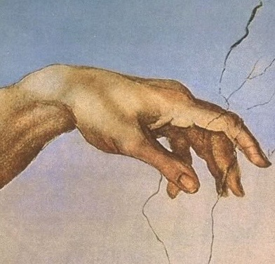
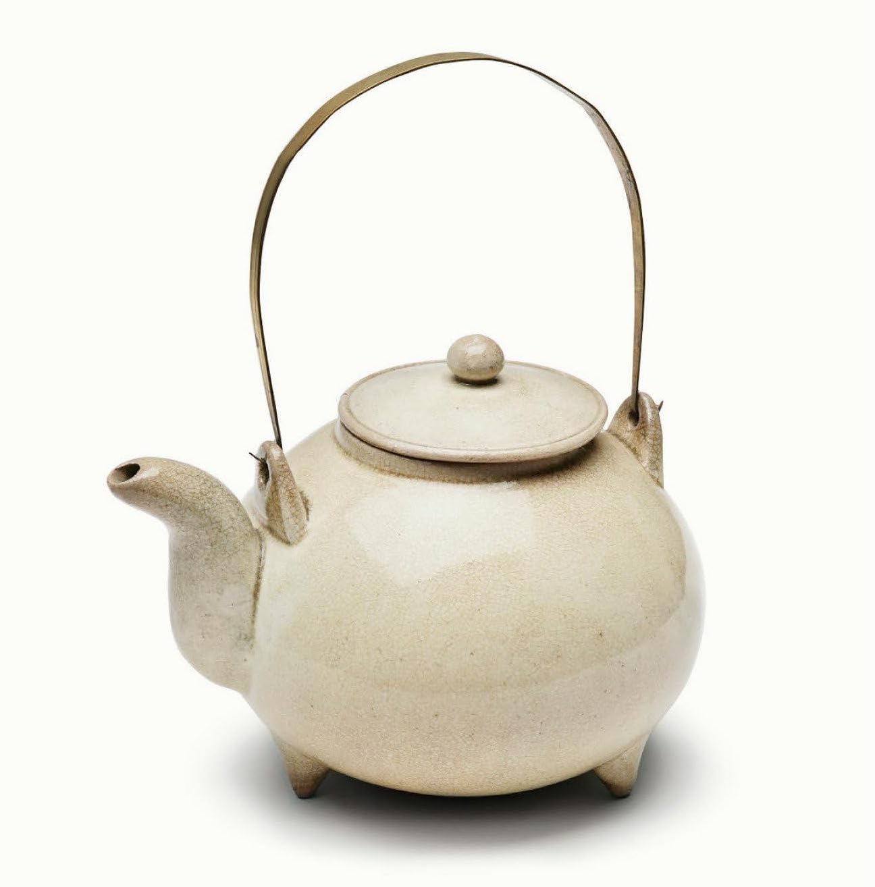

Two Lies and a Truth
Question 5
Hover over the box you think is true

I'm a morning person
wrong
if this was the case, i'd wake up before the sun rose so i can watch the sky burn before cooling down to blue. but instead, i wake up late, paint my chipped nails red, and peel the skin around them. out comes the red 40, the nano-plastics, the thicker than water. wash my hands from it all and walk out the door letting the cold air crack them and finish the job
I love NYC
wrong, but Grand Central might be the only part that's worth it.
Still though, when I go up those mile-long escalators, see everyone wrapped in grays and blacks, it feels like an assembly line. Rats running to the subway and I'm part of the race.

I'm trying to be optimistic
correctomundo. i'm trying so i can brush it all off and not let it get to me. there is more than one way to view the world.